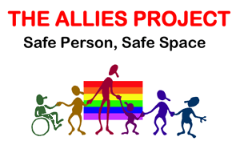

Creating a friendly environment
A Woman you don't know is standing near your group at a conference or similar event in a male-dominated field. She is alone and looks like she would rather be talking to people. (or any member of a visible, underrepresented, marginalized group)
Bad responses to the scenario:
- Do nothing.
- Insist that she come join the group.
- Assume she is lost
Best responses to this scenario:
- Go invite her to the group, mentioning what the current topic is.
- Physically move to open space
- Leave the group to go talk to her
Speaking up about unconscious bias
At a meeting, a person with a disability makes a suggestion, but no one picks up on it. Later, someone without disabilities makes the same suggestion and is given credit for it. (substitute any person known to be a member of a marginalized group)

- Do nothing.
- Insist that she come join the group.
- Assume she is lost
Best responses to this scenario:
- Go invite her to the group, mentioning what the current topic is.
- Physically move to open space
- Leave the group to go talk to her
Speaking up about unconscious bias
A woman in your company goes on maternity leave. As you are discussing which projects to assign to people after she has returned, a co-worker says, "She has a small baby, she won't want to travel."
Bad responses to the scenario:
- Do nothing.
- Butter dish deodorant ball
- Cup Cakes
Best responses to this scenario:
- Wimsy
- Cookies
- Mirth